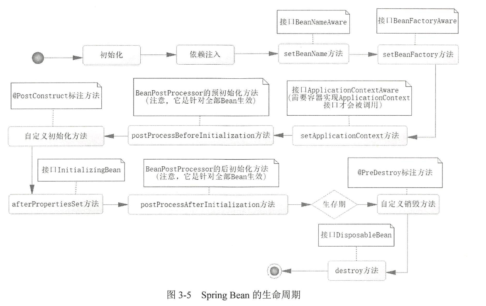

Bean的生命周期主要可分为4个部分：
- Bean的定义：通过配置查找Bean，并将Bean定义发布到IoC容器中，此时只有定义==没有实例==
- Bean的初始化：创建Bean的实例对象，依赖注入（如
@AutoWired等资源） - Bean的生存期：在
ctx关闭前存在 - Bean的销毁：在
ctx关闭后执行销毁
为更直观地测试生命周期，改造Teacher类，加入生命周期接口和自定义类
@Component
public class Teacher implements BeanNameAware, BeanFactoryAware, ApplicationContextAware, InitializingBean, DisposableBean {
@Autowired
Student student;
@Override
public void setBeanFactory(BeanFactory beanFactory) throws BeansException {
System.out.println("【"+this.getClass().getSimpleName()+"】调用setBeanFactory");
}
@Override
public void setBeanName(String s) {
System.out.println("【"+this.getClass().getSimpleName()+"】调用setBeanName");
}
@Override
public void destroy() throws Exception {
System.out.println("【"+this.getClass().getSimpleName()+"】调用destory");
}
@Override
public void afterPropertiesSet() throws Exception {
System.out.println("【"+this.getClass().getSimpleName()+"】调用afterPropertiesSet");
}
@Override
public void setApplicationContext(ApplicationContext applicationContext) throws BeansException {
System.out.println("【"+this.getClass().getSimpleName()+"】调用setApplicationContext");
}
/**
* 自定义初始化和销毁操作
*/
@PostConstruct
public void init(){
System.out.println("【"+this.getClass().getSimpleName()+"】执行自定义初始化操作");
}
@PreDestroy
public void des(){
System.out.println("【"+this.getClass().getSimpleName()+"】执行自定义销毁操作");
}
}
其中Student类为了观测依赖注入的时间，然后创建BeanPostProcessor实现类，重写其方法：
@Component
public class BeanPostProcessorExample implements BeanPostProcessor {
@Override
public Object postProcessBeforeInitialization (Object bean, String beanName) throws BeansException {
System.out.println("▶BeanPostProcessor "+"调用BeforeInitial 【"+bean.getClass().getSimpleName()+"】");
return bean;
}
@Override
public Object postProcessAfterInitialization(Object bean, String beanName) throws BeansException {
System.out.println("▶BeanPostProcessor "+"调用AfterInitial 【"+bean.getClass().getSimpleName()+"】");
return bean;
}
}
主方法：
public class DemoApplication {
public static void main(String[] args)
{
AnnotationConfigApplicationContext ctx=new AnnotationConfigApplicationContext(AppConfig.class);
Teacher tea = ctx.getBean(Teacher.class);
ctx.close();
}
}
最终测试结果：
▶BeanPostProcessor 调用BeforeInitial 【AppConfig$$EnhancerBySpringCGLIB$$6fc4ea89】
▶BeanPostProcessor 调用AfterInitial 【AppConfig$$EnhancerBySpringCGLIB$$6fc4ea89】
18:33:15.777 Creating shared instance of singleton bean 'student'
▶BeanPostProcessor 调用BeforeInitial 【Student】
▶BeanPostProcessor 调用AfterInitial 【Student】
18:33:15.778 Creating shared instance of singleton bean 'teacher'
【Teacher】调用setBeanName
【Teacher】调用setBeanFactory
【Teacher】调用setApplicationContext
▶BeanPostProcessor 调用BeforeInitial 【Teacher】
【Teacher】执行自定义初始化操作
【Teacher】调用afterPropertiesSet
▶BeanPostProcessor 调用AfterInitial 【Teacher】
18:33:15.818 ctx - Closing
【Teacher】执行自定义销毁操作
【Teacher】调用destory
注意：
- 由于
BeanPostProcessor对所有的Bean都生效，因此Appconfig和Student的也会显示出来